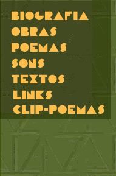
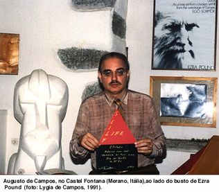

|  |
BIOGRAPHY Born in São Paulo
(Brazil) in 1931, poet, translator, literary and music critic. In 1951
he published his first book of poems, O REI MENOS O REINO (The King Minus
the Kingdom). In 1952, with his brother Haroldo de Campos and Decio Pignatari,
he launched the literary magazine "Noigandres", the origin of
the Noigandres Group which initiated the international movement of concrete
poetry in Brazil. The second issue of that magazine (1955) contained his
series of colorpoems POETAMENOS (Minuspoet), written in 1953, and considered
the first consistent examples of concrete poetry in Brazil. Verse and
conventional syntax are abandoned and the words are rearranged in graphic
patterns. sometimes printed in six different colors, under inspiration
of Webern's Klangfarbenmelodie. In 1956 he participated in the organization
of the First National Exhibition of Concrete Art (Painting and Poetry)
in the Museum of Modern Art in São Paulo. His work has since been included
in many international exhibitions, as well in worldknown anthologies
like "Concrete Poetry: an International Anthology", edited by
Stephen Bann (London, 1967), "Concrete Poetry: a World View",
edited by Mary Ellen Solt (University of Bloomington, Indiana, 1968),"
Anthology of Concrete Poetry", edited by Emmet Williams (NY, 1968). Most of his poems were
assembled in VIVA VAIA,1979, DESPOESIA,
1994, and NÃO (with a CDR of his Clip-Poems), 2003.
Other important works are POEMOBILES (1974),
CAIXA PRETA(Black Box)1975, collections of object-poems
in collaboration with the graphic artist
and designer Julio Plaza.
 As a translator of poetry, Augusto specialized in rendering the work of avantgarde
authors like Pound ("Mauberley", "The Cantos"), Joyce ("Finnegans
Wake"), Gertrude Stein and cummings, or the Russian Mayakovsky and Khlebnikov,
He also translated some of the great "inventors" of the past: Arnaut
Daniel and the troubadours, Donne and the metaphysical poets, Mallarmé and the
French Symbolists. A first anthology of his work, expanded in several monographies,
is VERSO REVERSO CONTROVERSO (1978). RIMBAUD LIVRE (Free Rimbaud
Book)(1992), HOPKINS: A BELEZA DIFÍCIL
(Hopkins: The Difficult Beauty) (1997), COISAS E ANJOS
DE RILKE (Things and Angels of Rilke), (2001).
From 1980 on, intensified his experiments with the new media, presenting his poems on electric billboard, videotext, neon, hologram and laser, computer graphics, and multimedia events, involving sound and music, as the plurivocal reading of CIDADECITYCITÉ (with Cid Campos), 1987/1991. Four of his holographic poems (in cooperation with Moyses Baumstein) were included in the exhibitions TRILUZ (1986) and IDEHOLOGIA (1987). A videoclippoem, PULSAR, with music by Caetano Veloso, was produced in 1984 in an Intergraph high resolution computer station. BOMB POEM and SOS, with music by his son, Cid Campos, were animated in a Silicon Graphic Computer Station of the University of São Paulo, 1992-3. His cooperation with Cid, begun in 1987 resulted in POESIA É RISCO (Poetry is Risk), a CD launched by PolyGram in 1995 and developed in a multimedia performance with the same title, a "verbivocovisual" show of poetry/music/image, which gained video-editing by Walter Silveira, and has been presented in several cities in Brazil and abroad. An installation assembling his digital poetic animations - CLIPPOEMS - was shown in 1997 as part of the exhibition Arte Suporte Computador (The Computer as Support for Art), Casa das Rosas. Some of his visual and sound poems can also be seen and heard at www.ubu.com |